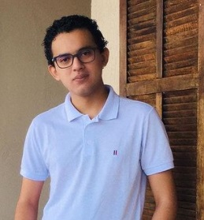

About me
I am Ph.D student in Mathematics at Federal University of Rio de Janeiro (UFRJ) under supervision of the professors Hamid Hassanzadeh and Marc Chardin (Sorbonne Université).
My research field is commutative algebra and its related topics in algebraic geometry. More precisely I have been studying residual intersection and integral closure theory.
Before I received my master degree in Mathematics at Federal University of Rio de Janeiro also under supervision of professor Hamid Hassanzadeh.
